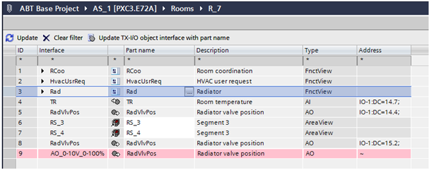
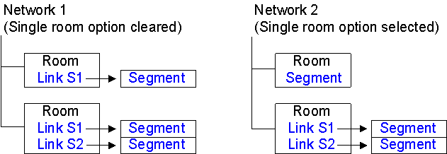

Special Features of Desigo Automation
The management platform supports a number of subsystems. Proprietary development of these BACnet systems may result in limitations in engineering and operation. The following Desigo automation stations are supported:
- PXC3 / PXC4 / PXC5
- DXR1 / DXR2
- Smart Thermostat
- iValve (Intelligent valves)
The following sections describe limitations that occur when integrating Desigo Automation.
Integration in FEP not Supported
Do not integrate Desigo Automation via an FEP installation (FEP means remote integration on another computer).
Multiple Trendlog Object
The Desigo automation station does not support multiple trendlogs. Use the single Trend-Log object to collect data for recording.
Time Sync (Time Master) on PXC4 and PXC5 Automation Stations
You can define the time master in ABT Site with the introduction of PXC4 and PXC 5. Do not define the server from ABT Site and Desigo CC as the time master at the same time since Desigo CC generally serves as the time master.
In the case, delete the definition for one of the time masters:
- Change in ABT Site: Delete the time master entry and reload the automation station.
- Change in Desigo CC: Select the time master or time sync recipient for each automation, the time sync type = None.
Desigo Automation System Configuration
Maximum Number of Supported Data Points
The hardware configuration must match the corresponding project size to work properly. The following project sizes are available:
- MS = ≤50,000 data points
- LS = 50,000 to 150,000 data points

NOTE:
The selected project setting is independent of the data point licensing.
Supports 150,000 System Data Points
The number of BACnet objects imported to the management station is limited to approximately 150,000 system data points (circa 3,000 rooms). This number is assumed and depends on the Desigo Automation applications in use and their project-specific extensions (number of lighting and blinds objects in use).
During data import, only the BACnet objects required for graphical display are imported. BACnet objects not used are filtered based on the interface name. The filter can be customized by project. All filtered objects can, however, be displayed in the SSA tool (System and Setup Assistant).
NOTE:
Interface names and access levels 6 and 7 cannot be changed during ABT engineering. All project-specific interface names are imported as additional BACnet objects if the interface names are changed. This significantly reduces the number of supported rooms.
Versions of functionality for Desigo Automation graphic templates
Desigo Automation graphic templates are displayed without additional configuration based on the interface name in Desigo CC. Display of Desigo Automation graphic templates is based on the version.
Tool | Programming room application style | Room automation firmware | Desigo CCGraphic template style |
Desigo V5.1. | "5.1" | FW 1.16 | Room graphics only |
DESIGO V6.x | "5.1" | FW 1.16 | Room graphics only |
"5.1" updated | >=FW 1.2 | Room graphics only | |
"6.0" | >=FW 1.2 | Room / segment graphic concept |
NOTE:
ABT Site engineering may not change interface names. The graphic template is only partially displayed, or not all if the interface names are changed.
Extend the Desigo Automation Applications in ABT Site
The existing standard texts must be used to extend a Desigo Automation application in ABT. Select Update TX-I/O object interface with partial designations (available as of version 5.1), if adding an extension from the ABT Site library to an existing application. The library name is entered in place of the interface name if this option is selected. As a result, the graphic no longer works in Desigo CC. The following illustration shows:
- Line 8: Correct interface name
- Line 9: Incorrect interface name from the ABT Site library

Deviations from default naming
Default naming of the objects is required to change the configuration in the room management editor. Object names that deviate from default naming are indicated in blue font. This is the case, for example, if the names in ABT Site were changed and the corresponding project imported to Desigo CC. These object names must first be added to the list of default devices. The objects can then be configured as usual.
Restricted Import of Data Points
Data point import is based on the object access level entered in ABT Site. All data points for the object access level Standard Operation (6) and Basic Operation (7) are imported to the system database. This strict restriction prevents the database from overloading.
NOTE:
Do not enter an access level in ABT Site. Changes to access levels render it impossible to maintain the system limits. Use the Extended Import Rules to configure your physical data point requirements.
The Impact of Owned Data Points during Data Import
In System Browser, the display of owned objects (as defined in ABT Site) can be influenced in the logical view prior to performing a data import:
- Owned objects are displayed in System Browser (highlighted in yellow) if the Show connect only check box is cleared.
- Conversely, only connect objects are displayed in System Browser if the Show connect only check box is selected; owned objects are suppressed.
Logical View: Show connect only | |
Cleared | Selected |
|
|


External References on Automation Stations
The Desigo Automation importer executes application modeling by searching for points that belong to the same application model. These types of points can be on the same device as the superposed application model, but also other devices. The Importer handles a single S1X file as an entity. As a result, all external references to elements must reference the same S1X file.
The system technician ensures that S1X file exported from the tool includes all referenced points since external references occur on a project and since there is no default configuration.
NOTE:
We recommended exporting all devices on a floor since external references between devices to various floors are rather rare (for example, Atrium).
User-designation
All data points with user designations are imported that match the application style or have access levels 6 or 7. This includes data points with user designations that are not imported as per this rule; you must use an advance import rule here.
User designations are supported in full in Desigo Automation if you observe the following:
- The Application modeling supports all items with a User designation.
- Data points with access levels 6 and 7 are always imported.
- Use the Extended Import Rules to adapt the user designation on your project.
Depiction for a Room with Only One Segment
When depicting rooms, the associated segments are displayed with a supplemental link. For one room, only one segment with a supplemental graphic template is opened. You can set the display of information for the room and segment on one graphic template for the entire network via the individual room option. The graphic depiction is in one graphic template if the individual room option is enabled prior to import. The has the following consequences:
- It always apply to the entire network.
- No new segment with the flexible room editor can be assigned to the individual rooms at a later date.
- The network must be deleted and the option cleared if you nevertheless need to add a segment to such an individual room. The automation station data must be reimported.
The following examples illustrate:
Network 1 with individual room option deactivated.
The link to the segment is displayed in this case. The segment is displayed in a new graphic template by selecting the link. Response and operation is the same as for multiple segments.
Network 2 with individual room option selected.
No link to the segment is displayed in this case. The available information is displayed directly using the room graphic template. Operations in the segment occur directly in the room graphic template.
During import, the pre-processor evaluates which rooms exist from a segment. Any individual room found, is amended using the prefix R_ to R1S_ . In the event of function R_HvacCoord11, function R1S_HvacCoord11 is entered as a new reference.

Reading Out Project Information
The installed project base can be read out with iBase. The iBase and Scripting extension modules must be installed. Refer to the iBase description for additional information.
Assign Access Rights to Object Model
A set pattern is used to assign Desigo object properties to a Desigo CC object model. Decisive are the read and write rights as defined in the SDU (System Definition Utility is the tool for creating Meta data). This information is taken over when manually creating the library on the object model (see Assignment Concept).

We distinguish between two different groups of SDU data for assignment to the object model:
- Objects with only read rights
- Objects with read and write rights
NOTES:
‒ Read and write rights are not considered when importing a data point instance. The assignment is made per the data point type information for the corresponding object model.
‒ If project-specific modifications are required, it must be done by changing the library type.
Object Property with Read Rights Only
In the SDU, the object property is defined with read rights from 1 to 7 only. The write rights are defined as 0 (No access). In the object model for Desigo CC, assignment occurs in this case in the Property Group, with the option Status. Display levels are assigned as per the table below.
Object Model Property Group: Display Level | ||
Access Right Automation Station (CFC) | Read Right (CFC) | Display in Desigo CC |
No access | 0 |
|
Internal | 1 | (DL3) Extended operation |
Extended service | 2 | (DL3) Extended operation |
Basic service | 3 | (DL3) Extended operation |
Administration | 4 | (DL2) Operation |
Extended operation | 5 | (DL2) Operation |
Standard Operation | 6 | (DL2) Operation |
Basic operation | 7 | (DL1) State and operating pane |
Object Property with Read/Write Rights
For object properties with read and write access, assignment for the Property Groupdisplay level and Command Groupcommanding are made per the definitions in the following tables.
Property Group
The read right is evaluated and assigned for the display level accordingly.
Object Model Property Group: Display Level | ||
Access Right Automation Station (ABT Site) | Read Acess (ABT Site) | Display in Desigo CC |
No access | 0 |
|
Internal | 1 | (DL3) Extended operation |
Extended service | 2 | (DL3) Extended operation |
Basic service | 3 | (DL3) Extended operation |
Administration | 4 | (DL2) Operation |
Extended operation | 5 | (DL2) Operation |
Standard Operation | 6 | (DL2) Operation |
Basic operation | 7 | (DL1) State and operating pane |
Write access 1 to 7 is always assigned to the BACnet Editor.
Object Model Property Group: Display Level | ||
Access Right Automation Station (ABT Site) | Write Access (ABT Site) | Display in Desigo CC |
No access | 0 |
|
Internal | 1 | (DL0) BACnet Editor |
Extended service | 2 | (DL0) BACnet Editor |
Basic service | 3 | (DL0) BACnet Editor |
Administration | 4 | (DL0) BACnet Editor |
Extended operation | 5 | (DL0) BACnet Editor |
Standard Operation | 6 | (DL0) BACnet Editor |
Basic operation | 7 | (DL0) BACnet Editor |
Command Groups
A Command Group control the buttons on the corresponding operating dialog boxes. The option Standard or Advanced is assigned depending on the defined write access.
Object Model Command Group | ||
Access Right Automation Station (ABT Site) | Write Access (ABT Site) | Option |
No access | 0 |
|
Internal | 1 |
|
Extended service | 2 | Advanced |
Basic service | 3 | Advanced |
Administration | 4 | Advanced / Standard |
Extended operation | 5 | Advanced / Standard |
Standard Operation | 6 | default |
Basic operation | 7 | default |
NOTES:
− There is another group for alarms on the Command Group. The group controls the buttons for acknowledging and resetting alarms.
- The assignments listed in the tables are standard assignments. There are, however, exceptions to the rules. Exceptions can only be viewed on the object model and not listed here.
Assignment Concept
The following diagram demonstrates a possible configuration, starting with SDU data up to actual operation in Desigo CC.
Display convention in the diagram:
- Each user group is defined its own scope, instead of predefined Scope rights.
- For each object property, the state is individually identified on Property Groups (read and write access) and Command Groups (active or inactive). Settings for Scope Rights are only defined once in the system.

Diagram Key | |
Topic | Description |
SDU data | The access rights of the individual data point types for the application program (BACnet objects) are set in the SDU data. They can be modified for a specific project in ABT Site. No automatic evaluation of access rights to the corresponding object model takes place in Desigo CC. The data is derived solely from the SDU data in the object model and manually entered in the object model. In other words, there is no software connection between SDU data and the object model.
|
Object model | The object model defines, as per SDU data access rights, which display level, property groups, and command configuration applies. The settings are taken over for all data points of the same data type and apply to the entire project. Any changes to the properties must apply to the entire project and are made by changing the library type NOTE: An individual data point cannot therefore be modified for a specific display level, property groups, and command configuration. |
Data point instances | Data point instances available in the SiB-X, are mapped by data point type for the corresponding object model. The data point instances inherit all object model definitions and cannot be changed for a specific instance. |
User group 1 User A Extended operation | User group 1 only has read access on Property Groups to the Status and to the Configuration. For Command Groups, the Default is active and for Advanced the inactive check box is selected. User A thus sees only individual properties during operation and not buttons. NOTE: The defined read right for Status has a higher priority as the selected check box for Standard. To increase readability, the check box is normally set to inactive for Standard. |
User group 2 User U Extended operation | User group 2 only has write access on Property Groups to the Status and read access to Configuration. For Command Groups, the Default is active and for Advanced the inactive check box is selected. In other words, user U sees all properties for operation and can operate the buttons on Present Value. The Out of Service buttons are hidden. |
User group 3 User X Extended operation | User group 3 has write access on Property Groups to the Status and to Configuration. For Command Groups, the Default is active and for Advanced the active check box is selected. In other words, user X sees all properties for operation and can operate the buttons on Present Value and Out of Service. |
 .
.Online Device Functions
The management platform provides several online functions to help you in maintenance and optimization. The following table lists these functions:
BACnet Device Functions. | |
Function | Description |
Turns on/off the automation station. Notifications are suppressed in this case. | |
Runs a cold start or warm start for a BACnet device. | |
Permits a backup of program structure (ABT Site data) and the current program data (setpoints) for an automation station. Project data is not on the BACnet device if EDoS is not used. | |
Restores the program structure (ABT Site data) and current project data (setpoints) for an automation station. | |
NOTE 1:
These tools require extensive knowledge of your plant, as well as knowledge of Desigo and BACnet.
NOTE 2:
When using online tools, remember that different responses may occur depending on the BACnet system supplier.
Known Limitations if Splitting a BACnet Network to Multiple Servers (Distributed Systems)
Automation stations and points on the same BACnet network are seen in the logical, user and management views under different systems.
- In the Application View, you search for schedules and trends in different application view subtrees. Select the correct system.
- The SiB-X importer can only handle points from one system. In other words, you can only import into one system at a time. As a result, if a node in the Logical View cannot reference a node from another system. The same problem could also arise in the User View.
- BACnet features cannot use references to another system.
- The Related items workspace does not show the trend log for a trended object in another system.
- The BACnet editor for trend log does not display trended property from another system.
- The BACnet editor for event enrollment does not display the supervised point from another system.
- Central Function Viewer does not display group members from another system
- Central Function Viewer does not discover group elements from another system
- The Central Function editor does not find elements on another system
- Groups table
- Rooms table
- Lighting table
- Blinds table
- The Room editor cannot edit scenes in rooms and segments that cannot be reached with the same Desigo CC driver.
- The Room editor cannot edit scenes in which lighting and shading cannot be reached with the same Desigo CC driver as the segment.
- The related items workspace does not list Desigo Automation group members for a selected group master, if they are not on the same system as the master.
- Flex Client can display a maximum of 200 room in tiles.